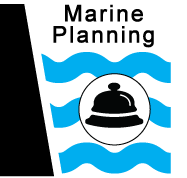
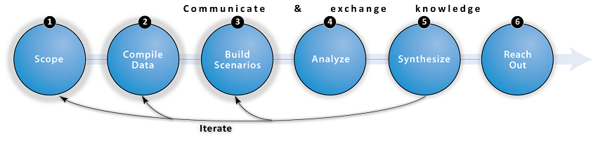

Concierge
As 50 million people are born each year and similar numbers seek to raise their standard of living, the Earth's marine ecosystems face expanding pressure from fisheries, aquaculture, energy production, runoff from land, shipping, recreation, climate change, and more (Millennium Ecosystem Assessment 2005, Halpern et al. 2008, and others). With careful planning, we can continue to derive benefits from oceans and coasts while protecting the natural capital that sustains life. Without careful planning, human activities will likely further degrade the oceans and squander the potential benefits provided by healthy marine ecosystems. To maintain and enhance the myriad benefits available from marine ecosystems, it has become clear that our oceans and coasts need better planning.
The concept of marine planning (also called marine spatial planning, maritime planning, coastal development planning, among other terms) calls for marine systems to be managed for multiple uses, in ways that account for diverse benefits delivered by ecosystems to people, and that guide the patterns and types of use to sustain ocean productivity for the needs of present and future generations (CBD 2004, CEQ 2010, European Commission 2011, UN General Assembly 2010).
Transforming the very appealing ideas of marine spatial planning into practical advice, guidance, and action on-the-ground and in-the-water, can be a complex and challenging process. Several proposed frameworks guide current planning (Kittinger et al. 2014, Cornu et al. 2014, Beck et al. 2009, Ehler & Douvere 2009, Day 2008), many of which suggest incorporating ecosystem services and risk to habitats as elements of planning (Arkema et al. 2014, Koehn et al. 2013). Technical tools within such frameworks can help add scientific rigor and transparency to spatial planning processes, but there is confusion over what they do and how they can be linked.
We designed this concierge to make it easier to learn about, get inspired by, and implement marine spatial planning. In particular, we focus on how to incorporate ecosystem service understanding into planning. With this tool, we hope to meet you where you are -- from nursing a fledgling interest in the topic to embarking on a full-blown planning process in your community, to everything in between. Just like the concierge in the lobby of a hotel, we've organized lots of information with the aim of helping you get what you need. The Marine Planning Concierge organizes existing technical approaches, information, and tools in a generalized spatial planning framework.
The steps we outline will help answer frequently asked questions about marine planning, including:
Where has marine planning already been implemented and by whom? (See Ehler et al. 2014 and OceanPlanning.org)
How does one find and compile relevant spatial data? (Data, step 2)
When and how are Scenarios (step 3) useful in this process?
There are many available decision-support tools I might use to Analyze (step 4) my data and information. How do I make sense of them all?
Many tools require specialized expertise to apply such as data pre-/post-processing. Where can I get help? (Analyze & Synthesize, steps 4-5)
How can I effectively summarize technical information (Synthesize & Reach Out, steps 5-6)
Where should I go for assistance when something goes wrong?
What exactly is marine planning and how do "ecosystem services" fit in?
Marine planning is an approach to achieve multiple objectives for ocean use by minimizing conflicts among users and reducing impacts on ecosystems.
Ecosystem services are the stream of benefits people get from earth's lands, waters, and biodiversity.
Without marine spatial planning, the delivery of diverse ecosystem services, now and in the future, is in jeopardy. Increasing demands on ocean space for diverse uses, including tourism, recreation, fishing, shipping, national security, oil and gas exploration and renewable energy (wind and wave), have led to more conflicts among users as well as additional impacts on already stressed ocean ecosystems (Lubchenco and Petes 2010, Douvere 2008, United Nations Environment Programme 2006). These increasing demands and stressed ecosystems are putting ecosystem services and human wellbeing in peril. Marine planning, when developed with the sectors and communities who are affected by these pressures and demands, can identify synergies and tradeoffs in human uses for ultimate management decisions.
Also, ecosystem services provide useful metrics for marine planning. They are, afterall, what connects people to life- and livelihood-giving oceans and coasts. A scientific approach underpinning marine planning contains explicit hypotheses about the mechanistic linkages between (1) human activities and earth processes such as climate, (2) ecosystem processes, condition, and distributions, and (3) the benefits flowing to people from ecosystems. For more information about the relationships between human uses ↔ ecosystems ↔ benefits, click on the "Human Uses" tab below to rotate the set of images.
Suggested Marine Planning Approach
In this guide we highlight an ecosystem service (ES) approach (Ruckelshaus et al. 2013) that can improve outcomes from an marine planning process. This means that during the planning process the focus is not just on the condition of the ecosystem itself, but also on the flow of benefits from ecosystems to people (or "ecosystem services"). Since this connection between environmental condition and human benefit is not typically considered in multi-objective ocean development and management, we offer a roadmap and resources for an ecosystem service approach to inform such spatial planning decisions.
Many marine planning approaches exist that converge around these common themes (Links). The Marine Planning Concierge draws on several such approaches, and adapts a general process for conducting decision-relevant assessments of ecosystem services to one tailored for the context of marine spatial planning (Rosenthal et al. 2014).

We encourage you to explore the six steps of this approach by clicking the menu links in the left panel. The approach is organized by standard decision and analytical steps in a science-policy process of engagement. For each step we provide some combination of the following elements:
 | Overview | Description of the step |
 | Goals | Intermediate and final products or outcomes |
 | Tips | Helpful advice and lessons learned |
 | Databases | Free sources for marine planning data |
 | Tools | Decision-support and helper tools |
| FAQ | Answers to frequently asked questions |
 | Links | Suggested reading and online links |
 | Use-Cases | Examples from NatCap case studies around the world |
NatCap Marine Planning Use-Cases
Learning about different marine planning projects can highlight methods and tools that can be adapted to your own projects. The Natural Capital Project (or "NatCap") has compiled lessons from seven use-cases in which we have been involved around the world. At the bottom of each step's page, we summarize how that step was accomplished for select use-cases. We also offer links to additional resources for exploring examples from around the world.
top